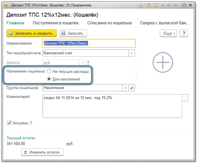
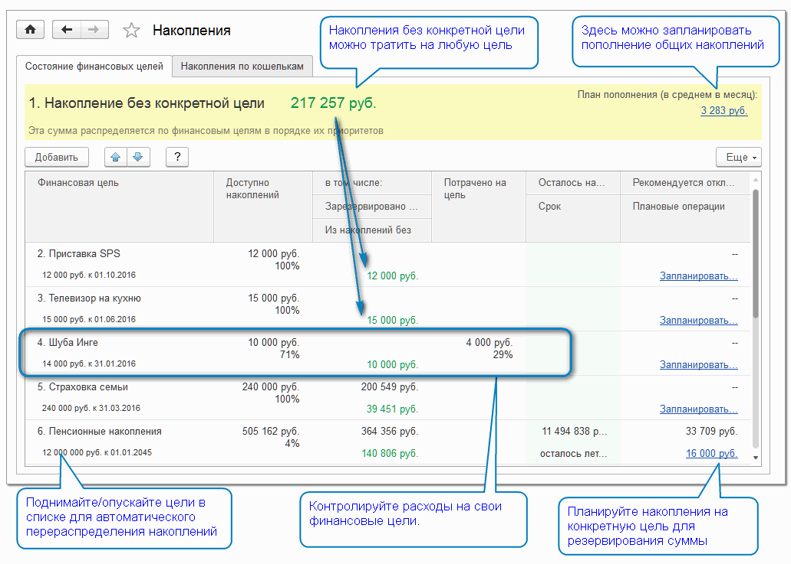
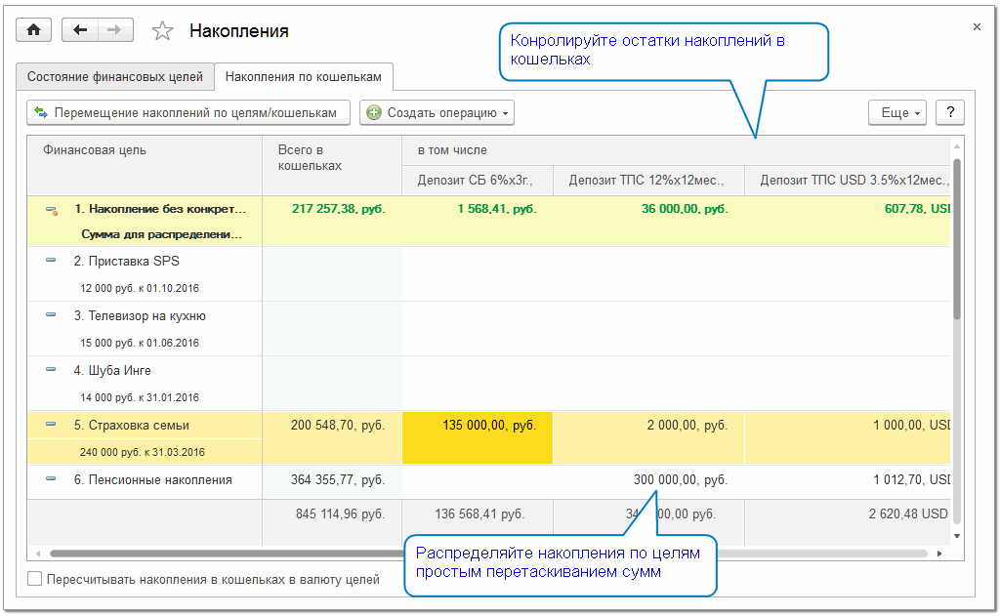

Страница Накопления предназначена для управления финансовыми целями и накоплениями.
Для накоплений используются отдельные кошельки, такие, как банковские депозиты, сберегательные счета и подобные инструменты, по возможности защищающие деньги от инфляции, и нецелевых трат. Такие кошельки имеют назначение Для накоплений.

Накопления предназначены исключительно для финансирования целей и не участвуют в планировании и оплате текущих расходов. Если возникнет необходимость оплатить за счет накоплений что-то другое, следует сначала вернуть сумму из накоплений в свободные деньги - снять деньги с депозита, продать ценные бумаги или драг.металлы, переложить деньги из конверта в кошелек и т.п. При этом, возможно, придется пересмотреть сроки и приоритеты финансовых целей.
Составьте список желаний, действительно достойных концентрации ваших усилий и финансов. Например, ими могут быть "Отпуск", "Новый автомобиль", "Образование детей", "Страховочный фонд", "Пенсионные накопления" и прочее...
Любое желание станет финансовой целью, когда вы установите срок и стоимость его исполнения.
Управлять финансовыми целями удобней всего на вкладке Состояние финансовых целей страницы Накопления.

Расставьте цели по приоритетам, а программа автоматически распределит по ним накопления и порекомендует сумму ежемесячного пополнения.
Некоторые финансовые цели, например, "Страховочный фонд семьи" или "Пенсионные накопления", не допускают использования отложенных на них денег ни на что другое. Накопления на такие цели являются личными фондами с максимальной степенью защиты.
Чтобы добиться этого, зарезервируйте накопленные суммы за такими целями:
- откройте раздел Накопления и вкладку Накопления по кошелькам
- в колонке с нужным кошельком перетяните мышью сумму из накоплений без конкретной цели на финансовую цель, для которой хотите зарезервировать накопления
- в открывшейся операции перемещения уточните резервируемую сумму и нажмите Учесть
Сумма, зарезервированная за конкретной целью, не будет использоваться в расчете доступных накоплений для других целей.

Для достижения финансовой цели не обязательно накапливать 100% ее стоимости и тратить всю сумму одномоментно. Например, для финансовой цели "Отпуск" можно в одном месяце купить билеты, в другом - забронировать отель, потом арендовать автомобиль, а оставшуюся сумму равномерно тратить на протяжении всего отдыха. Чтобы контролировать общую сумму расходов на цель указывайте эту цель в операциях расходов.